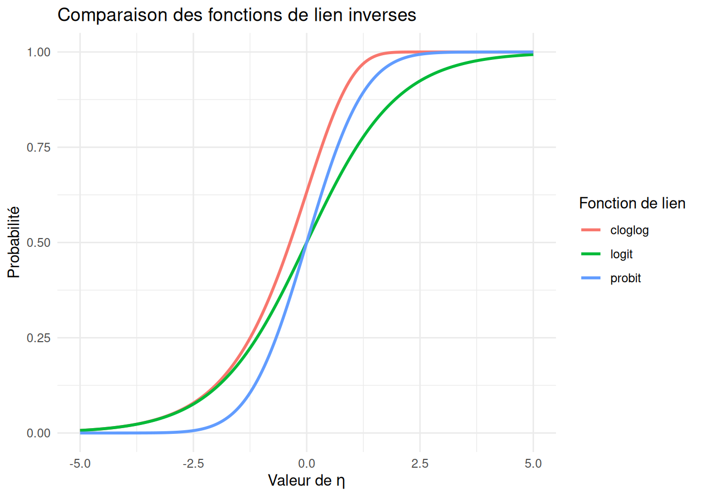
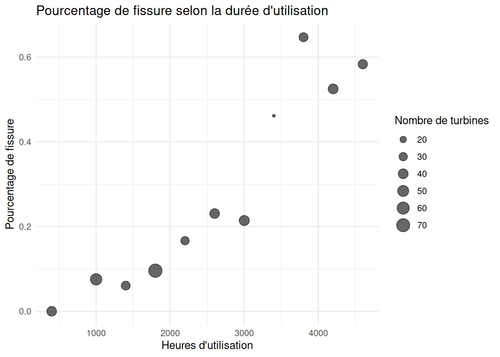
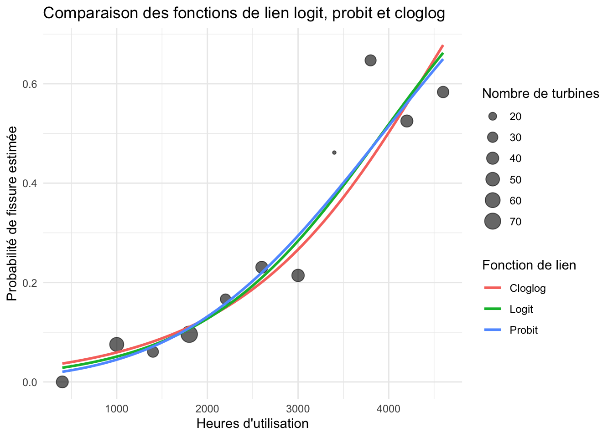
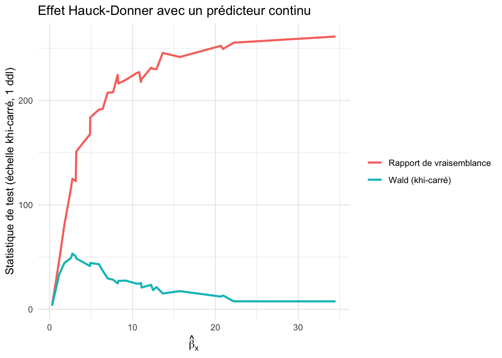
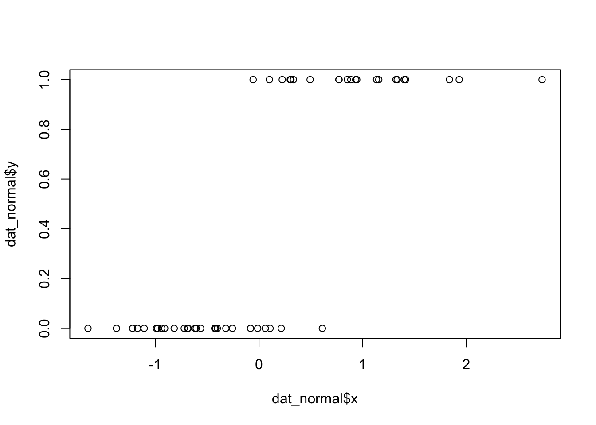
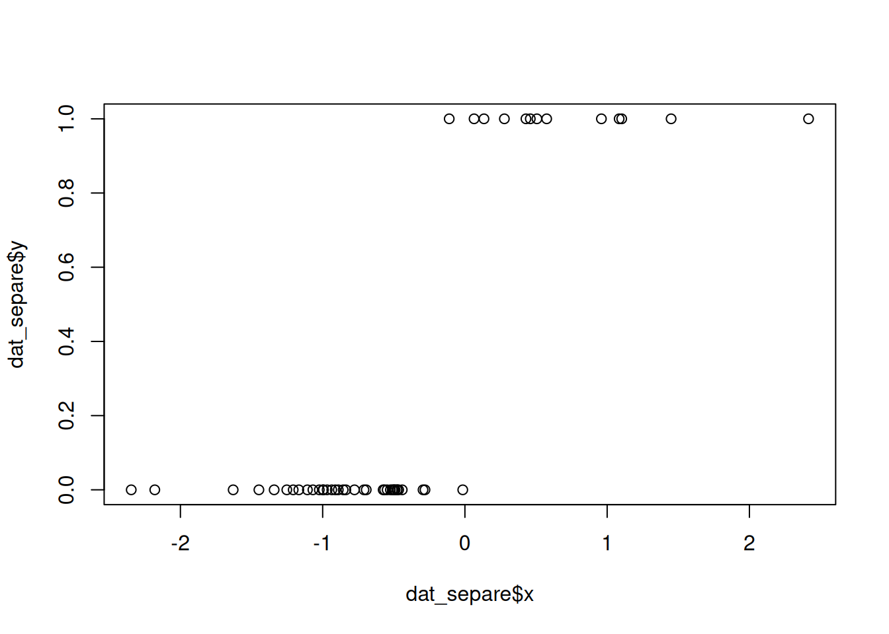

2 Modèles de régression pour données binaires
Les modèles de régression linéaire ne permettent de considérer que les cas où la variable réponse \(Y_i\) est normale. Cependant, dans plusieurs situations, on a une variable réponse discrète qui ne peut prendre qu’un nombre fini (ou dénombrable) de valeurs possibles. Dans ce chapitre, on s’intéresse au cas où \(Y_i\) suit une loi de Bernoulli ou une loi binomiale.
Exemple
Quatre exemples tirés de la librairie GLMsData de R (Dunn et Smyth 2018) :
quilpie: observations de 1921 à 1988 de la quantité de pluie mesurée en juillet à Quilpie (Australie), une ville semi-aride du Queensland où les précipitations conditionnent fortement l’agriculture locale. La réponse vaut 1 si la quantité de pluie dépasse 10 mm (un seuil jugé suffisant pour amorcer les semis) et 0 sinon ; la variable explicative est un indice de pression atmosphérique, le Southern Oscillation Index (SOI), qui capture les phases El Niño/La Niña connues pour influencer les précipitations dans cette région.nminer: 31 transects de deux hectares en milieu boisé (eucalyptus) dans l’ouest de Victoria (Australie) ; la réponse vaut 1 si au moins un mineur bruyant (Manorina melanocephala, un oiseau indigène particulièrement agressif qui chasse les espèces plus petites) est détecté dans le transect et 0 sinon. Les variables explicatives décrivent l’habitat : densité d’eucalyptus (Eucs), superficie du transect (Area), présence de pâturage (Grazed), présence d’arbustes (Shrubs), nombre d’arbres de type buloke (Bulokes) et quantité de bois mort au sol (Timber).deposit: 18 observations sur l’efficacité de trois insecticides (\(A\), \(B\) ou \(C\)) appliqués à différentes doses (en mg) sur des insectes ; la réponse \(Y_i\) est le nombre d’insectes tués parmi les \(m_i\) insectes exposés à chaque combinaison insecticide-dose.turbines: 11 observations issues d’une expérience de fiabilité sur des roues de turbine (Nelson 1982) ; la réponse \(Y_i\) est le nombre de roues présentant des fissures parmi \(m_i\) roues mises à l’essai, en fonction du nombre d’heures de fonctionnement.
2.1 Données et modèle
2.1.1 Données individuelles (Bernoulli)
Dans les deux premiers exemples, la variable réponse \(Y_i \in \{0,1\}\). Les données sont sous la forme \(\{(Y_i,\boldsymbol{X}_i),\, i=1,\ldots,n\}\). On dit que \(Y_i\) suit une loi de Bernoulli de paramètre \(\pi_i \in [0,1]\) :
\[ \begin{aligned} P(Y_i = y_i) &= \pi_i^{y_i}(1-\pi_i)^{1-y_i}, \quad y_i \in \{0,1\},\\ E[Y_i] &= \mu_i = \pi_i,\\ Var[Y_i] &= \pi_i(1-\pi_i). \end{aligned} \]
Définition — Prédicteur linéaire et fonction de lien
On pose \(\eta_i = \beta_0 + \beta_1 X_{i1} + \cdots + \beta_p X_{ip}\) (le prédicteur linéaire) et on relie \(\pi_i\) à \(\eta_i\) par une fonction de lien \(g\) supposée connue : \(\eta_i=g(\pi_i)\), c’est-à-dire \[\pi_i = P(Y_i = 1) = g^{-1}(\beta_0 + \beta_1 X_{i1} + \cdots + \beta_p X_{ip}).\]
2.1.2 Données groupées (binomiale)
Dans les deux derniers exemples, \(Y_i \in \{0,1,\ldots,m_i\}\), où \(m_i\) est un entier connu représentant le nombre total d’expériences indépendantes ; \(Y_i\) est le nombre de succès. On écrit \(Y_i \sim \mathrm{Bin}(m_i,\pi_i)\) :
\[ \begin{aligned} P(Y_i = y_i) &= \binom{m_i}{y_i}\pi_i^{y_i}(1-\pi_i)^{m_i - y_i}, \quad y_i \in \{0,1,\ldots,m_i\},\\ E[Y_i] &= \mu_i = m_i\pi_i,\\ Var[Y_i] &= m_i\pi_i(1-\pi_i) = \frac{\mu_i(m_i - \mu_i)}{m_i}. \end{aligned} \]
On pose de nouveau \(\eta_i = g(\pi_i)\), qui peut s’écrire \(\eta_i=g(\mu_i/m_i)\). À noter, on voit souvent \(g(\mu_i)\), par abus de notation. Si \(m_1 = \cdots = m_n = 1\), on retrouve la loi de Bernoulli : celle-ci est un cas particulier de la loi binomiale, et les développements qui suivent couvrent les deux situations.
2.1.3 Fonctions de lien
La fonction de lien doit assurer que \(\pi_i = g^{-1}(\eta_i) \in [0,1]\). Trois choix sont courants :
- Logit : \(g(u) = \mathrm{logit}(u) = \log\!\left(\dfrac{u}{1-u}\right)\), d’où \(\pi_i = \dfrac{e^{\eta_i}}{1+e^{\eta_i}}\). En R :
link="logit"dansglm. Il s’agit du lien le plus utilisé en régression binaire. Ceci est en partie expliqué par son interprétabilité, voir la remarque ci-dessous. - Probit : \(g(u) = \Phi^{-1}(u)\), où \(\Phi\) est la fonction de répartition de la \(\mathcal{N}(0,1)\), d’où \(\pi_i = \Phi(\eta_i)\). En R :
link="probit". - C-log-log : \(g(u) = \log\{-\log(1-u)\}\), d’où \(\pi_i = 1 - e^{-e^{\eta_i}}\). En R :
link="cloglog".
Propriété — \(g^{-1}\) est une fonction de répartition
Dans les trois cas, \(g^{-1}(\cdot)\) est une fonction de répartition. C’est précisément cette propriété qui garantit que \(\pi_i = g^{-1}(\eta_i) \in [0,1]\), peu importe le lien choisi et peu importe la valeur (réelle, non bornée) de \(\eta_i\).
En pratique, les trois liens donnent souvent des résultats très similaires.
Voici une comparaison des probabilités prédites pour les trois liens, en fonction de \(\eta_i\).
Le cas du lien logit — Interprétation
Avec le lien logit, on a
\[ \eta_i = \ln\left(\frac{\pi_i}{1-\pi_i}\right) \]
et donc,
\[ e^{\eta_i} = \frac{\pi_i}{1-\pi_i}. \]
Définition — Cote (odds)
Le rapport ci-dessus a une interprétation concrète : c’est la cote (odds), notée \(o_i\) :
\[ o_i = \frac{\pi_i}{1-\pi_i} = \frac{P(Y_i=1)}{P(Y_i=0)}. \]
Autrement dit, la cote compare la probabilité que l’événement se produise (\(Y_i=1\)) à la probabilité qu’il ne se produise pas (\(Y_i=0\)). Par exemple :
si \(\pi_i = 0{,}5\), alors \(o_i = 1\) : autant de chances que l’événement arrive ou n’arrive pas ;
si \(\pi_i = 0{,}75\), alors \(o_i = 3\) : l’événement a 3 fois plus de chances de se produire que de ne pas se produire.
Interprétation du coefficient \(\beta_j\). Dans le modèle,
\[ \eta_i = \beta_0 + \beta_1 X_1 + \cdots + \beta_j X_j + \cdots \]
Si on augmente \(X_j\) d’une unité, toutes les autres variables restant constantes, \(\eta_i\) augmente de \(\beta_j\).
Propriété — Effet multiplicatif sur la cote
Comme \(o_i = e^{\eta_i}\), une augmentation d’une unité de \(X_j\) (toutes les autres variables restant constantes) se traduit par une multiplication de la cote :
\[ o_i^{\text{nouveau}} = e^{\eta_i + \beta_j} = e^{\eta_i} \cdot e^{\beta_j} = o_i^{\text{ancien}} \cdot e^{\beta_j}. \]
Une augmentation unitaire de \(X_j\) multiplie donc la cote par \(e^{\beta_j}\) ; \(e^{\beta_j}\) est le rapport de cotes (odds ratio). On distingue trois cas :
si \(e^{\beta_j} > 1\) : augmenter \(X_j\) augmente la cote (et donc \(P(Y_i=1)\)) ;
si \(e^{\beta_j} < 1\) : augmenter \(X_j\) diminue la cote ;
si \(e^{\beta_j} = 1\) (c’est-à-dire \(\beta_j = 0\)) : \(X_j\) n’a pas d’effet sur la cote.
2.2 Inférence statistique
2.2.1 Estimation des paramètres \(\boldsymbol{\beta}\)
Point de départ : la vraisemblance. On observe \(n\) variables \(Y_i \sim \text{Binomiale}(m_i, \pi_i)\). La fonction de log-vraisemblance s’écrit
\[ \ell(\boldsymbol{\pi}; \boldsymbol{y}) = \sum_{i=1}^n \log\left[P(Y_i = y_i)\right] = \sum_{i=1}^n \left\{ \log\binom{m_i}{y_i} + y_i \log(\pi_i) + (m_i - y_i)\log(1-\pi_i) \right\}. \]
Lien avec \(\beta\). Cette fonction dépend de \(\beta\) indirectement, via \(\pi_i\) : rappelons que
\[ \pi_i = g^{-1}(\beta_0 + \beta_1 X_{i1} + \cdots + \beta_p X_{ip}), \]
où \(g^{-1}\) est l’inverse de la fonction de lien (par exemple la fonction logistique si \(g\) est le lien logit).
Reparamétrisation en termes de \(\mu_i\). Il est parfois plus commode de travailler avec \(\mu_i = m_i \pi_i\) (l’espérance de \(Y_i\)) plutôt qu’avec \(\pi_i\) directement. En substituant \(\pi_i = \mu_i/m_i\) dans la log-vraisemblance et en isolant tous les termes qui ne dépendent pas de \(\beta\) (regroupés dans la constante \(K\), qui contient le terme \(\log\binom{m_i}{y_i}\)), on obtient une forme équivalente mais plus simple :
\[ \ell(\boldsymbol{\mu}; \boldsymbol{y}) = \sum_{i=1}^n \left\{ y_i \log(\mu_i) + (m_i - y_i)\log(m_i - \mu_i) \right\} + K, \]
où \(\boldsymbol{\mu} = (\mu_1, \dots, \mu_n)^\top\) et \(K\) ne dépend pas de \(\beta\) (donc n’affecte pas la maximisation). C’est sous cette forme qu’on reconnaîtra, plus loin, que le modèle de régression binomiale appartient à la famille exponentielle. Cette écriture est aussi plus facile à utiliser pour le calcul de la déviance.
Le cas du lien logit — Log-vraisemblance
Avec le lien logit, \(\pi_i = \dfrac{e^{\eta_i}}{1+e^{\eta_i}}\) et \(1-\pi_i = \dfrac{1}{1+e^{\eta_i}}\), où
\[ \eta_i = \beta_0 + \beta_1 X_{i1} + \cdots + \beta_p X_{ip}. \]
On a alors
\[ \log(\pi_i) = \eta_i - \log(1+e^{\eta_i}), \qquad \log(1-\pi_i) = -\log(1+e^{\eta_i}), \]
de sorte que
\[ y_i \log(\pi_i) + (m_i - y_i)\log(1-\pi_i) = y_i \eta_i - m_i \log(1+e^{\eta_i}). \]
La log-vraisemblance se réécrit donc directement en fonction de \(\boldsymbol{\beta}\) :
\[ \ell(\boldsymbol{\beta}; \boldsymbol{y}) = \sum_{i=1}^n \left\{ \log\binom{m_i}{y_i} + y_i \eta_i - m_i \log\left(1+e^{\eta_i}\right) \right\}. \]
Estimation. L’estimateur du maximum de vraisemblance \(\hat{\boldsymbol{\beta}}\) est la valeur de \(\boldsymbol{\beta}\) qui maximise \(\ell\). Contrairement à la régression linéaire classique, il n’existe pas de solution analytique (forme fermée) ici, à cause de la non-linéarité introduite par la fonction de lien \(g\). On doit donc résoudre le problème numériquement, typiquement par l’algorithme des moindres carrés pondérés itératifs (IRLS – Iteratively Reweighted Least Squares), qui est une application de la méthode de Newton-Raphson (ou Fisher scoring) à ce problème.
Le cas du lien logit — Estimation
Dérivée par rapport à \(\beta_j\)
On dérive \(\ell(\boldsymbol{\beta}; \boldsymbol{y})\) terme à terme par rapport à \(\beta_j\) (\(j = 0, 1, \dots, p\)), en notant que \(\dfrac{\partial \eta_i}{\partial \beta_j} = X_{ij}\) (avec \(X_{i0} \equiv 1\) pour l’ordonnée à l’origine).
Le terme \(\log\binom{m_i}{y_i}\) ne dépend pas de \(\boldsymbol{\beta}\), sa dérivée est donc nulle. Pour le terme \(y_i \eta_i\) :
\[ \frac{\partial}{\partial \beta_j}\left( y_i \eta_i \right) = y_i X_{ij}. \]
Pour le terme \(m_i \log(1+e^{\eta_i})\), on utilise la règle de dérivation en chaîne :
\[ \frac{\partial}{\partial \beta_j} \log\left(1+e^{\eta_i}\right) = \frac{e^{\eta_i}}{1+e^{\eta_i}} \cdot \frac{\partial \eta_i}{\partial \beta_j} = \pi_i X_{ij}, \]
d’où
\[ \frac{\partial}{\partial \beta_j}\left( m_i \log(1+e^{\eta_i}) \right) = m_i \pi_i X_{ij}. \]
En combinant les trois morceaux, la dérivée partielle de la log-vraisemblance est
\[ \frac{\partial \ell(\boldsymbol{\beta}; \boldsymbol{y})}{\partial \beta_j} = \sum_{i=1}^n \left( y_i - m_i \pi_i \right) X_{ij}. \tag{2.1}\]
Vecteur score
En posant \(\boldsymbol{U}(\boldsymbol{\beta}) = \left( \dfrac{\partial \ell}{\partial \beta_0}, \dots, \dfrac{\partial \ell}{\partial \beta_p} \right)^\top\), \(\boldsymbol{X}\) la matrice de design (\(n \times (p+1)\)), \(\boldsymbol{y} = (y_1, \dots, y_n)^\top\) et \(\boldsymbol{\mu} = (m_1\pi_1, \dots, m_n\pi_n)^\top\), on obtient sous forme matricielle :
\[ \boldsymbol{U}(\boldsymbol{\beta}) = \boldsymbol{X}^\top (\boldsymbol{y} - \boldsymbol{\mu}). \tag{2.2}\]
Les estimateurs du maximum de vraisemblance \(\hat{\boldsymbol{\beta}}\) sont solutions de \(\boldsymbol{U}(\boldsymbol{\beta}) = \boldsymbol{0}\), un système non linéaire sans solution fermée. On le résout numériquement par l’algorithme de Newton-Raphson / IRLS (voir ?sec-irls), qui requiert la matrice d’information (dérivée seconde de \(\ell\)).
2.2.2 Séparation des données
Définition — Séparation complète et quasi-complète
On dit qu’il y a séparation complète si un hyperplan permet de classer parfaitement les \(Y_i\) à partir des covariables : il existe \(\boldsymbol\beta\) tel que \(\boldsymbol{X}_i^\top\boldsymbol\beta > 0\) chaque fois que \(Y_i=1\) et \(\boldsymbol{X}_i^\top\boldsymbol\beta < 0\) chaque fois que \(Y_i=0\) (ou l’inverse).
On parle de séparation quasi-complète lorsque cette séparation est presque parfaite : il existe un hyperplan qui classe correctement toutes les observations, sauf sur un sous-ensemble où \(\boldsymbol{X}_i^\top\boldsymbol\beta = 0\) exactement.
En présence de séparation (complète ou quasi-complète), l’estimateur du maximum de vraisemblance \(\hat{\boldsymbol\beta}\) n’existe pas au sens usuel : la vraisemblance continue d’augmenter à mesure que \(\|\boldsymbol\beta\| \to \infty\) dans la direction qui sépare les données, sans jamais atteindre de maximum fini. En pratique, l’algorithme IRLS ne converge pas, ou converge vers des \(\hat\beta_j\) extrêmement grands, limités seulement par le critère d’arrêt numérique de l’algorithme.
R signale souvent ce problème par l’avertissement
Warning: glm.fit: fitted probabilities numerically 0 or 1 occurredaccompagné de coefficients estimés très grands en valeur absolue et d’erreurs-types démesurément grandes — souvent des ordres de grandeur plus grandes que le coefficient lui-même.
Exemple — Illustration de la séparation complète
set.seed(1)
x <- c(rnorm(10, mean = -3), rnorm(10, mean = 3))
y <- c(rep(0, 10), rep(1, 10)) # séparation complète : y=0 si x<0, y=1 si x>0
modele_separe <- glm(y ~ x, family = binomial)Warning: glm.fit: algorithm did not convergeWarning: glm.fit: fitted probabilities numerically 0 or 1 occurredsummary(modele_separe)$coefficients Estimate Std. Error z value Pr(>|z|)
(Intercept) 6.411375 36706.87 0.0001746642 0.9998606
x 20.668550 32170.73 0.0006424645 0.9994874plot(x,y, pch = 19)
Le coefficient de x et son erreur-type explosent tous les deux — signe clair de séparation, pas d’un effet réellement très fort.
Remarque — Que faire en cas de séparation?
Quelques approches courantes :
- Régression logistique pénalisée (Firth) : ajoute un terme de pénalité à la vraisemblance (
logistfen R), qui garantit l’existence d’un estimateur fini même sous séparation. - Retirer ou regrouper la variable problématique : si une variable catégorielle cause la séparation, fusionner la catégorie en cause avec une catégorie voisine peut régler le problème.
- Régularisation (ridge, lasso) : contraint les coefficients et empêche qu’ils divergent vers l’infini.
- Recueillir plus de données : si la séparation vient d’un petit échantillon plutôt que d’une relation déterministe réelle, un échantillon plus grand peut la faire disparaître.
Ce phénomène a aussi une conséquence directe sur l’inférence : les tests de Wald deviennent peu fiables en présence de séparation, même partielle — voir le phénomène de Hauck-Donner plus loin.
2.2.3 Information de Fisher et variance des estimateurs
Matrice d’information de Fisher. On calcule ensuite la matrice d’information de Fisher \(I\), dont l’élément \((j,k)\) est
\[ I_{jk} = -\left.\frac{\partial^2 \ell}{\partial \beta_j \partial \beta_k}\right|_{\hat{\boldsymbol{\beta}}}. \]
La matrice de variance-covariance de \(\hb\) est estimée par
\[ \widehat{\text{Var}}(\hb) = I^{-1}, \]
et la distribution asymptotique de \(\hb\) est approximée par
\[ \hb \;\overset{\cdot}{\sim}\; \mathcal{N}\{\bb,\, \hvar{\hb} \}. \]
\(\overset{\cdot}{\sim}\)
La notation \(\dot\sim\) signifie que la variable aléatoire suit approximativement la loi indiquée, de façon asymptotique — ici, quand \(n\to\infty\). Cette approximation provient d’un résultat de convergence en distribution, qu’on explicitera à la section sur la déviance.Dans ce qui suit, \(\hv{\hb}\) sera utilisé à la place de \(\hvar{\hb}\), pour alléger la notation. De plus, on écrit \(\hv{\hbj{j}}=[\hvar{\hb}]_{jj}\) quand on parle de la variance estimée du paramètre \(\beta_j\).
Forme explicite dans le cas binomial. On montre que
\[ \widehat{\text{V}}(\hb) = (X^\top W X)^{-1}, \]
où \(W\) est une matrice diagonale d’entrées
\[ w_i = \frac{\hmu{i} (m_i - \hmu{i})}{m_i}, \]
avec
\[ \hmu{i} = m_i \hpi{i} = m_i\, g^{-1}(\hbj{0} + \hbj{1} X_{i1} + \cdots + \hbj{p} X_{ip}). \]
Le cas du lien logit — Expression de \(w_i\)
Remarque (Cas du lien logit).
Avec le lien logit, \(\hpi{i} = \dfrac{e^{\heta{i}}}{1+e^{\heta{i}}}\), où \(\heta{i} = \hbj{0} + \hbj{1} X_{i1} + \cdots + \hbj{p} X_{ip}\). L’entrée \(w_i\) se simplifie alors en
\[ w_i = \frac{\hmu{i}(m_i - \hmu{i})}{m_i} = m_i\, \hpi{i}(1-\hpi{i}). \]
Exemple — Jeu de données turbines
On ajuste le modèle avec les trois fonctions de lien :
library(GLMsData)
data(turbines)
turbines_obs <- turbines |>
mutate(prop_observee = Fissures / Turbines)
ggplot() +
geom_point(
data = turbines_obs,
aes(x = Hours, y = prop_observee, size = Turbines),
color = "black",
alpha = 0.6
) +
labs(
x = "Heures d'utilisation",
y = "Pourcentage de fissure",
color = "Fonction de lien",
size = "Nombre de turbines",
title = "Pourcentage de fissure selon la durée d'utilisation"
) +
theme_minimal()
modele.logit <- glm(
cbind(Fissures, Turbines - Fissures) ~ Hours,
data = turbines,
family = binomial(link = "logit")
)
modele.probit <- glm(
cbind(Fissures, Turbines - Fissures) ~ Hours,
data = turbines,
family = binomial(link = "probit")
)
modele.cloglog <- glm(
cbind(Fissures, Turbines - Fissures) ~ Hours,
data = turbines,
family = binomial(link = "cloglog")
)
summary(modele.logit)$coefficients Estimate Std. Error z value Pr(>|z|)
(Intercept) -3.9235965551 0.3779589447 -10.381013 3.025490e-25
Hours 0.0009992372 0.0001141505 8.753682 2.065015e-18summary(modele.probit)$coefficients Estimate Std. Error z value Pr(>|z|)
(Intercept) -2.2758074623 1.974187e-01 -11.527823 9.552869e-31
Hours 0.0005783211 6.259715e-05 9.238777 2.493310e-20summary(modele.cloglog)$coefficients Estimate Std. Error z value Pr(>|z|)
(Intercept) -3.6032798443 3.247391e-01 -11.095923 1.312978e-28
Hours 0.0008104936 9.013218e-05 8.992278 2.421587e-19library(ggplot2)
library(dplyr)
grille <- data.frame(
Hours = seq(min(turbines$Hours), max(turbines$Hours), length.out = 200)
)
predire_modele <- function(modele, nom_lien) {
grille |>
mutate(
p_hat = predict(modele, newdata = grille, type = "response"),
lien = nom_lien
)
}
predictions <- bind_rows(
predire_modele(modele.logit, "Logit"),
predire_modele(modele.probit, "Probit"),
predire_modele(modele.cloglog, "Cloglog")
)
turbines_obs <- turbines |>
mutate(prop_observee = Fissures / Turbines)
ggplot() +
geom_point(
data = turbines_obs,
aes(x = Hours, y = prop_observee, size = Turbines),
color = "black",
alpha = 0.6
) +
geom_line(
data = predictions,
aes(x = Hours, y = p_hat, color = lien),
linewidth = 1
) +
labs(
x = "Heures d'utilisation",
y = "Probabilité de fissure estimée",
color = "Fonction de lien",
size = "Nombre de turbines",
title = "Comparaison des fonctions de lien logit, probit et cloglog"
) +
theme_minimal()
Les trois liens mènent à des coefficients significatifs et à des courbes prédites \(\hat\pi^*\) très similaires.
Les intervalles de confiance et tests concernant les \(\beta_j\) sont obtenus par la méthode de Wald. Un intervalle de confiance de niveau \((1-\alpha)\) pour \(\beta_j\) est \[\left[\hat\beta_j - z_{\alpha/2}\sqrt{\hat{\text V}(\hat\beta_j)}\,;\ \hat\beta_j + z_{\alpha/2}\sqrt{\hat{\text V}(\hat\beta_j)}\right],\] où \(z_\gamma\) est le quantile de la \(\mathcal{N}(0,1)\) défini par \(P(Z > z_\gamma) = \gamma\).
Pour tester \(H_0: \beta_j = 0\) contre \(H_1: \beta_j\neq 0\), on rejette \(H_0\) au seuil \(\alpha\) si \(|z_{obs}| > z_{\alpha/2}\), avec \(z_{obs} = \hat\beta_j/\sqrt{\hat{\text V}(\hat\beta_j)}\). Le seuil observé (\(p\)-valeur) est \(\alpha^* = 2P(Z > |z_{obs}|)\).
Remarque — Le phénomène de Hauck-Donner
Le test de Wald pour \(H_0 : \beta_j = 0\) repose sur la statistique
\[ z_{obs} = \frac{\hat\beta_j}{\sqrt{\hat{\text V}(\hat\beta_j)}}, \]
où l’erreur-type est estimée à partir de la courbure de la log-vraisemblance évaluée au point estimé \(\hat\beta_j\), plutôt que sous \(H_0\). Cette dépendance locale peut mener à un comportement contre-intuitif : lorsque \(|\hat\beta_j|\) devient très grand (par exemple en présence de séparation — complète ou quasi-complète — ou d’un effet très fort), la courbure de la vraisemblance en \(\hat\beta_j\) s’aplatit, ce qui gonfle \(\sqrt{\hat{\text V}(\hat\beta_j)}\) et peut faire diminuer \(z_{obs}\) — donnant l’impression que l’effet n’est pas significatif, alors qu’il l’est. On pourrait montrer que cela est causé par le fait que l’erreur-type augmente plus rapidement que la valeur absolue de l’estimation du paramètre.
Ce phénomène, documenté par Hauck et Donner (1977), n’affecte pas le test du rapport de vraisemblance, qui compare directement la vraisemblance en \(\hat\beta_j\) à celle en \(0\) plutôt que de s’appuyer sur une approximation locale :
\[ G^2 = -2\left[\ell(\text{modèle réduit}) - \ell(\text{modèle complet})\right] \;\overset{\cdot}{\sim}\; \chi^2_1 \quad \text{sous } H_0. \]
En pratique : le test «par défaut» de la plupart des fonctions de R utilise le test de Wald, car celui-ci est moins coûteux en calcul et est fiable avec de grands échantillons. Il faut porter une attention particulière aux cas où un coefficient très grand ressort avec une valeur-p de Wald étonnamment élevée. Il faut comparer avec anova(modele_reduit, modele_complet, test = "Chisq") avant de conclure à la non-significativité.
Exemple — Effet Hauck-Donner
library(purrr)
library(dplyr)
library(ggplot2)
simuler_logistique <- function(n, beta0 = 0, beta1 = 1) {
x <- rnorm(n, mean = 0, sd = 1)
eta <- beta0 + beta1 * x
p <- plogis(eta)
y <- rbinom(n, size = 1, prob = p)
data.frame(x = x, y = y)
}
set.seed(123)
n <- 200
valeurs_beta1 <- seq(0.5, 15, by = 0.5) # vrai effet croissant -> séparation
resultats <- map_dfr(valeurs_beta1, function(b1) {
dat <- simuler_logistique(n, beta0 = 0, beta1 = b1)
mod_complet <- glm(y ~ x, data = dat, family = binomial)
mod_reduit <- glm(y ~ 1, data = dat, family = binomial)
beta_hat <- coef(mod_complet)["x"]
et_hat <- summary(mod_complet)$coefficients["x", "Std. Error"]
wald_chisq <- (beta_hat / et_hat)^2
lr_chisq <- as.numeric(2 * (logLik(mod_complet) - logLik(mod_reduit)))
data.frame(
beta1_vrai = b1,
beta_hat = beta_hat,
wald_chisq = wald_chisq,
lr_chisq = lr_chisq
)
})
resultats |>
tidyr::pivot_longer(
c(wald_chisq, lr_chisq),
names_to = "test",
values_to = "statistique"
) |>
mutate(
test = recode(
test,
wald_chisq = "Wald (khi-carré)",
lr_chisq = "Rapport de vraisemblance"
)
) |>
ggplot(aes(x = beta_hat, y = statistique, color = test)) +
geom_line(linewidth = 1) +
labs(
x = expression(hat(beta)[x]),
y = "Statistique de test (échelle khi-carré, 1 ddl)",
color = NULL,
title = "Effet Hauck-Donner avec un prédicteur continu"
) +
theme_minimal()
2.2.4 Comparaison directe des sorties
Pour illustrer concrètement l’écart entre les deux tests, comparons un cas “normal” (\(k = 15\), pas de séparation) à un cas de séparation quasi-complète (\(k = 19\), un seul échec sur 20 dans le groupe \(x = 1\)) :
simuler_logistique <- function(n, beta0 = 0, beta1 = 1) {
x <- rnorm(n, mean = 0, sd = 1)
eta <- beta0 + beta1 * x
p <- plogis(eta) # équivalent à 1 / (1 + exp(-eta))
y <- rbinom(n, size = 1, prob = p)
data.frame(x = x, y = y)
}
# Cas 1 : k = 15, pas de séparation
dat_normal <- simuler_logistique(n = 50, beta0 = 0, beta1 = 5)
plot(dat_normal$x, dat_normal$y)
mod_normal <- glm(y ~ x, data = dat_normal, family = binomial)
summary(mod_normal)$coefficients Estimate Std. Error z value Pr(>|z|)
(Intercept) -0.9870555 0.6429306 -1.535244 0.124723837
x 5.7141805 1.9696783 2.901073 0.003718873# Cas 2 : k = 19, séparation quasi-complète
set.seed(1234)
dat_separe <- simuler_logistique(n = 50, beta0 = 0, beta1 = 15)
plot(dat_separe$x, dat_separe$y)
mod_separe <- glm(y ~ x, data = dat_separe, family = binomial)
summary(mod_separe)$coefficients Estimate Std. Error z value Pr(>|z|)
(Intercept) 1.028036 1.301805 0.7897003 0.4297028
x 14.144188 7.929599 1.7837205 0.0744691On constate ici que la valeur-p n’est pas significative au seuil 5%.
Si on regarde les valeurs-p des tests des rapports de vraisemblance pour les deux cas:
mod_normal_reduit <- glm(y ~ 1, data = dat_normal, family = binomial)
anova(mod_normal_reduit, mod_normal, test = "Chisq")Analysis of Deviance Table
Model 1: y ~ 1
Model 2: y ~ x
Resid. Df Resid. Dev Df Deviance Pr(>Chi)
1 49 68.593
2 48 19.252 1 49.341 2.151e-12 ***
---
Signif. codes: 0 '***' 0.001 '**' 0.01 '*' 0.05 '.' 0.1 ' ' 1mod_separe_reduit <- glm(y ~ 1, data = dat_separe, family = binomial)
anova(mod_separe_reduit, mod_separe, test = "Chisq")Analysis of Deviance Table
Model 1: y ~ 1
Model 2: y ~ x
Resid. Df Resid. Dev Df Deviance Pr(>Chi)
1 49 57.306
2 48 4.990 1 52.316 4.725e-13 ***
---
Signif. codes: 0 '***' 0.001 '**' 0.01 '*' 0.05 '.' 0.1 ' ' 12.2.5 Intervalle de confiance pour une probabilité prédite
Pour \(\boldsymbol{X}^* = (1, X_1^*,\ldots,X_p^*)^\top\), on estime \(\pi^*\) par \(\hat\pi^* = g^{-1}({\boldsymbol{X}^*}^\top\hat\beta)\). Deux approches :
Transformation de l’intervalle sur \(\eta^*\) : un IC pour \({X^*}^\top\beta\) est \[\left[{\boldsymbol{X}^*}^\top\hat\beta \pm z_{\alpha/2}\sqrt{\hat{\text V}({\boldsymbol{X}^*}^\top\hat\beta)}\right], \qquad \hat{\text V}({\boldsymbol{X}^*}^\top\hat\beta) = {\boldsymbol{X}^*}^\top \hat{\text V}(\hat\beta)\, \boldsymbol{X}^*,\] et on applique \(g^{-1}\) aux deux bornes. Cet intervalle respecte toujours \([0,1]\).
Méthode du delta : \(\hat{\text V}(\hat\pi^*) = h({\boldsymbol{X}^*}^\top\hat\beta)\, \hat{\text V}({\boldsymbol{X}^*}^\top\hat\beta)\) avec \(h(u) = \{\partial g^{-1}(u)/\partial u\}^2\), d’où l’IC approximatif \(\left[\hat\pi^* \pm z_{\alpha/2}\sqrt{\hat{\text V}(\hat\pi^*)}\right]\).
Les deux méthodes donnent en pratique des résultats très similaires.
Le cas du lien logit — Méthode du delta
Avec le lien logit, \(g^{-1}(u) = \dfrac{e^u}{1+e^u}\), dont la dérivée est
\[ \frac{\partial g^{-1}(u)}{\partial u} = \frac{e^u}{(1+e^u)^2} = g^{-1}(u)\left\{1-g^{-1}(u)\right\}. \]
Ainsi, \(h(u) = \left[g^{-1}(u)\{1-g^{-1}(u)\}\right]^2\), et évalué en \(u = {\boldsymbol{X}^*}^\top\hat\beta\), on obtient \(h({\boldsymbol{X}^*}^\top\hat\beta) = \left[\hat\pi^*(1-\hat\pi^*)\right]^2\). La règle du delta donne alors
\[ \hat{\text V}(\hat\pi^*) = \left[\hat\pi^*(1-\hat\pi^*)\right]^2 \hat{\text V}\left({\boldsymbol{X}^*}^\top\hat\beta\right). \]
Pour aller plus loin avec la théorie — Idée de la méthode du delta
On a \(\hat\theta = {\boldsymbol{X}^*}^\top\hat\beta\), dont on connaît la distribution asymptotique : \(\hat\theta \overset{\cdot}{\sim} \mathcal{N}(\theta,\, \hat{\text V}(\hat\theta))\). On s’intéresse cependant à \(\hat\pi^* = g^{-1}(\hat\theta)\), une transformation non linéaire de \(\hat\theta\) — et la normalité asymptotique ne se transporte pas automatiquement à travers une transformation non linéaire, ni sa variance.
La méthode du delta contourne le problème en approximant \(g^{-1}\) localement par sa tangente (développement de Taylor au premier ordre) autour de \(\theta\) : \[ g^{-1}(\hat\theta) \approx g^{-1}(\theta) + \left.\frac{\partial g^{-1}(u)}{\partial u}\right|_{u=\theta} (\hat\theta - \theta). \] Comme \(g^{-1}(\theta) = \pi^*\) est une constante et que le second terme n’est qu’une transformation linéaire de \(\hat\theta\), on peut maintenant calculer sa variance directement : \[ \text{Var}(\hat\pi^*) \approx \left[\left.\frac{\partial g^{-1}(u)}{\partial u}\right|_{u=\theta}\right]^2 \text{Var}(\hat\theta), \] qu’on estime en substituant \(\hat\theta\) à \(\theta\) (d’où \(\hat{\text V}(\hat\pi^*) = h({\boldsymbol{X}^*}^\top\hat\beta)\,\hat{\text V}({\boldsymbol{X}^*}^\top\hat\beta)\), où \(h(u) = \{\partial g^{-1}(u)/\partial u\}^2\)).
Contrairement à la première approche (transformer les bornes de l’IC sur \(\eta^*\)), cette méthode approxime directement la variance de \(\hat\pi^*\) sur son échelle naturelle — mais comme elle repose sur une approximation linéaire locale, l’intervalle de confiance qui en résulte n’est pas garanti de rester dans \([0,1]\), contrairement à celui obtenu par transformation.
2.3 Sélection de modèles
2.3.1 Déviance
Pour juger si un modèle avec \(p+1\) paramètres \(\boldsymbol\beta\) s’ajuste bien aux données, il est utile de le comparer au modèle le plus flexible possible : celui qui accorde à chaque observation son propre paramètre, sans aucune structure imposée par des variables explicatives.
Définition — Modèle saturé
On l’appelle le modèle saturé, avec \(n\) paramètres \(\{\tilde\mu_1,\ldots,\tilde\mu_n\}\) (un par observation, plutôt que \(p+1\) pour l’ensemble de l’échantillon).
Il est facile de constater que le modèle saturé maximise la log-vraisemblance, donnée par \[ \ell(\tilde\mu_1,\ldots,\tilde\mu_n; \boldsymbol{y}) = \sum_{i=1}^n \left\{ y_i \log(\tilde\mu_i) + (m_i - y_i)\log(m_i - \tilde\mu_i) \right\} + K, \]
quand \(\{\tilde\mu_1,\ldots,\tilde\mu_n\}= \{y_1,\ldots,y_n\}\), c’est-à-dire si la log-vraisemblance est calculée en ajustant chaque paramètre exactement sur la donnée observée correspondante. Le modèle saturé représente donc l’ajustement parfait : il reproduit exactement les données, sans laisser aucun résidu. Il n’a cependant aucune valeur prédictive ou explicative, puisqu’il ne fait que mémoriser les observations — son seul rôle est de servir de référence, un étalon auquel comparer un modèle plus parcimonieux (avec \(p+1 \ll n\) paramètres) pour quantifier ce qui reste à expliquer.
La déviance. En notant \(\tilde{\boldsymbol{\mu}}=(\tilde\mu_1,\ldots,\tilde\mu_n)^\top\) et \(\hat{\boldsymbol{\mu}}=(\hat\mu_1,\ldots,\hat\mu_n)^\top\), la statistique du rapport de vraisemblance entre le modèle saturé et le modèle considéré est
\[\Lambda=\frac{L(\tilde{\boldsymbol{\mu}}; \boldsymbol y)}{L(\hat{\boldsymbol{\mu}}; \boldsymbol y)} =\frac{L(\boldsymbol{y}; \boldsymbol y)}{L(\hat{\boldsymbol{\mu}}; \boldsymbol y)}.\]
Définition — Déviance
On définit la déviance \(D\) comme étant deux fois le log de ce rapport:
\[D =2\left\{l(y,y) - l(\hat\mu,y)\right\} = 2\sum_{i=1}^n\left\{y_i\log\!\left(\frac{y_i}{\hmu{i}}\right) + (m_i - y_i)\log\!\left(\frac{m_i - y_i}{m_i - \hmu{i}}\right)\right\} = \sum_{i=1}^n d_i.\]
\(D\) est la déviance du modèle et \(d_i\) la déviance individuelle de l’observation \(i\) ; chaque \(d_i\) mesure l’écart entre l’ajustement parfait \(y_i\) et l’ajustement \(\hmu{i}\) obtenu par le modèle.
Remarque
Le \(2\) de la formule de la déviance est nécessaire pour avoir
\[D \xrightarrow{d} \chi_{n-(p+1)}^2, \text{lorsque } m_i\to \infty,\]
c’est-à-dire que la déviance tend vers la loi du khi-carré à \(n-(p+1)\) degrés de liberté quand les \(m_i\) tendent vers l’infini.
\(\xrightarrow{d}\)
La flèche \(\xrightarrow{d}\) indique une convergence en distribution (ou en loi) : la distribution de la quantité à gauche (ici \(D\)) se rapproche de celle indiquée à droite (ici \(\chi^2_{n-(p+1)}\)) lorsque le paramètre asymptotique tend vers l’infini (ici \(m_i\)), sans que \(D\) elle-même ne converge vers une valeur précise. C’est ce même type de convergence qui justifiait la notation \(\dot\sim\) utilisée plus tôt pour \(\hat\beta\).Autrement, c’est-à-dire lorsque les \(m_i\) sont finis, on utilise plutôt
\[D \;\overset{\cdot}{\sim}\; \chi_{n-(p+1)}^2\]
comme approximation.
Propriété — Non-négativité de la déviance
Puisque le modèle saturé maximise la vraisemblance parmi tous les modèles possibles, \(l(y,y) \geq l(\hat\mu,y)\) toujours, et donc \(D \geq 0\) : plus \(D\) est petit, plus le modèle considéré se rapproche du modèle saturé, donc plus il s’ajuste bien aux données.
La déviance joue le même rôle que la somme des carrés des résidus en régression linéaire : elle sert à évaluer l’adéquation du modèle et à comparer des modèles.
2.3.2 Comparaison de modèles emboîtés
Pour comparer deux modèles emboîtés de déviances \(D_1\) (complet) et \(D_2\) (réduit), la statistique de test est \(\chi^2 = D_2 - D_1\).
Propriété — Distribution asymptotique de \(\chi^2 = D_2-D_1\)
Sous \(H_0\) (le modèle réduit est adéquat), \(\chi^2\) suit une loi du khi-deux à \(d\) degrés de liberté, où \(d\) est la différence du nombre de paramètres.
Exemple — Introduction des termes quadratiques et cubiques dans l’exemple turbines
On teste \(H_0: \beta_2 = \beta_3 = 0\) (modèle avec Hours seulement contre modèle avec termes en Hours\(^2\) et Hours\(^3\)) :
library(GLMsData)
data(turbines)
modele.reduit <- glm(
cbind(Fissures, Turbines - Fissures) ~ Hours,
data = turbines,
family = binomial
)
modele.complet <- glm(
cbind(Fissures, Turbines - Fissures) ~ Hours + I(Hours^2) + I(Hours^3),
data = turbines,
family = binomial
)
stat.test <- deviance(modele.reduit) - deviance(modele.complet)
p.valeur <- 1 - pchisq(stat.test, df = 2)
p.valeur[1] 0.4767217On ne rejette pas \(H_0\) : le modèle réduit est adéquat.
2.3.3 Comparaison de modèles non emboîtés : AIC et BIC
Comme pour les modèles linéaires, on utilise \[AIC = -2\,l(\hat\mu;y) + 2(p+1), \qquad BIC = -2\,l(\hat\mu;y) + \log(n)(p+1).\] Le modèle ayant le plus petit \(AIC\) (ou \(BIC\)) est préférable. En R : extractAIC(modele) et extractAIC(modele, k=log(n)).
2.3.4 Sélection automatique
Les méthodes pas à pas forward, backward et stepwise fonctionnent exactement comme pour les modèles linéaires (fonction step avec l’argument direction).
Exemple — Sélection automatique sur le jeu de données nminer
library(GLMsData)
data(nminer)
# On construit la réponse binaire décrite dans le texte :
# 1 si au moins un mineur bruyant a été détecté, 0 sinon
nminer$Detecte <- as.numeric(nminer$Minerab > 0)
# Modèle complet : effets additifs de toutes les variables explicatives disponibles
modele.complet <- glm(Detecte ~ Eucs + Area + Grazed + Shrubs + Bulokes + Timber,
data = nminer, family = binomial)Warning: glm.fit: fitted probabilities numerically 0 or 1 occurred# Backward : part du modèle complet, retire des termes
modele.backward <- step(modele.complet, direction = "backward")Start: AIC=22.45
Detecte ~ Eucs + Area + Grazed + Shrubs + Bulokes + TimberWarning: glm.fit: fitted probabilities numerically 0 or 1 occurred
Warning: glm.fit: fitted probabilities numerically 0 or 1 occurred Df Deviance AIC
- Bulokes 1 8.646 20.646
- Area 1 9.152 21.152
<none> 8.453 22.453
- Shrubs 1 11.633 23.633
- Grazed 1 14.761 26.761
- Timber 1 16.856 28.856
- Eucs 1 34.332 46.332Warning: glm.fit: fitted probabilities numerically 0 or 1 occurred
Step: AIC=20.65
Detecte ~ Eucs + Area + Grazed + Shrubs + TimberWarning: glm.fit: fitted probabilities numerically 0 or 1 occurred Df Deviance AIC
- Area 1 9.272 19.272
<none> 8.646 20.646
- Shrubs 1 11.790 21.790
- Grazed 1 14.796 24.796
- Timber 1 16.857 26.857
- Eucs 1 36.861 46.861Warning: glm.fit: fitted probabilities numerically 0 or 1 occurred
Step: AIC=19.27
Detecte ~ Eucs + Grazed + Shrubs + Timber
Df Deviance AIC
<none> 9.272 19.272
- Shrubs 1 12.075 20.075
- Grazed 1 14.986 22.986
- Timber 1 16.865 24.865
- Eucs 1 37.161 45.161# Forward : part du modèle vide, ajoute des termes jusqu'au modèle complet
modele.vide <- glm(Detecte ~ 1, data = nminer, family = binomial)
modele.forward <- step(modele.vide, direction = "forward",
scope = formula(modele.complet))Start: AIC=44.68
Detecte ~ 1
Df Deviance AIC
+ Eucs 1 19.185 23.185
+ Bulokes 1 40.074 44.074
<none> 42.684 44.684
+ Timber 1 41.630 45.630
+ Shrubs 1 42.002 46.002
+ Area 1 42.426 46.426
+ Grazed 1 42.443 46.443
Step: AIC=23.18
Detecte ~ Eucs
Df Deviance AIC
+ Grazed 1 16.942 22.942
<none> 19.184 23.184
+ Shrubs 1 17.272 23.272
+ Timber 1 18.657 24.657
+ Bulokes 1 19.168 25.168
+ Area 1 19.178 25.178
Step: AIC=22.94
Detecte ~ Eucs + Grazed
Df Deviance AIC
+ Timber 1 12.075 20.075
<none> 16.942 22.942
+ Shrubs 1 16.865 24.865
+ Area 1 16.935 24.935
+ Bulokes 1 16.942 24.942
Step: AIC=20.07
Detecte ~ Eucs + Grazed + TimberWarning: glm.fit: fitted probabilities numerically 0 or 1 occurred Df Deviance AIC
+ Shrubs 1 9.2721 19.272
<none> 12.0747 20.075
+ Area 1 11.7902 21.790
+ Bulokes 1 11.9989 21.999Warning: glm.fit: fitted probabilities numerically 0 or 1 occurred
Step: AIC=19.27
Detecte ~ Eucs + Grazed + Timber + ShrubsWarning: glm.fit: fitted probabilities numerically 0 or 1 occurred
Warning: glm.fit: fitted probabilities numerically 0 or 1 occurred
Warning: glm.fit: fitted probabilities numerically 0 or 1 occurred Df Deviance AIC
<none> 9.2721 19.272
+ Area 1 8.6462 20.646
+ Bulokes 1 9.1522 21.152# Stepwise: part du modèle complet, ajoute et retire au besoin
modele.step <- step(modele.complet, direction = "both")Start: AIC=22.45
Detecte ~ Eucs + Area + Grazed + Shrubs + Bulokes + TimberWarning: glm.fit: fitted probabilities numerically 0 or 1 occurred
Warning: glm.fit: fitted probabilities numerically 0 or 1 occurred Df Deviance AIC
- Bulokes 1 8.646 20.646
- Area 1 9.152 21.152
<none> 8.453 22.453
- Shrubs 1 11.633 23.633
- Grazed 1 14.761 26.761
- Timber 1 16.856 28.856
- Eucs 1 34.332 46.332Warning: glm.fit: fitted probabilities numerically 0 or 1 occurred
Step: AIC=20.65
Detecte ~ Eucs + Area + Grazed + Shrubs + TimberWarning: glm.fit: fitted probabilities numerically 0 or 1 occurred
Warning: glm.fit: fitted probabilities numerically 0 or 1 occurred
Warning: glm.fit: fitted probabilities numerically 0 or 1 occurred Df Deviance AIC
- Area 1 9.272 19.272
<none> 8.646 20.646
- Shrubs 1 11.790 21.790
+ Bulokes 1 8.453 22.453
- Grazed 1 14.796 24.796
- Timber 1 16.857 26.857
- Eucs 1 36.861 46.861Warning: glm.fit: fitted probabilities numerically 0 or 1 occurred
Step: AIC=19.27
Detecte ~ Eucs + Grazed + Shrubs + TimberWarning: glm.fit: fitted probabilities numerically 0 or 1 occurred
Warning: glm.fit: fitted probabilities numerically 0 or 1 occurred
Warning: glm.fit: fitted probabilities numerically 0 or 1 occurred Df Deviance AIC
<none> 9.272 19.272
- Shrubs 1 12.075 20.075
+ Area 1 8.646 20.646
+ Bulokes 1 9.152 21.152
- Grazed 1 14.986 22.986
- Timber 1 16.865 24.865
- Eucs 1 37.161 45.161summary(modele.backward)
Call:
glm(formula = Detecte ~ Eucs + Grazed + Shrubs + Timber, family = binomial,
data = nminer)
Coefficients:
Estimate Std. Error z value Pr(>|z|)
(Intercept) -6.7086 4.3062 -1.558 0.1193
Eucs 1.4941 0.8688 1.720 0.0855 .
Grazed 12.7870 8.1296 1.573 0.1157
Shrubs -5.9792 4.5601 -1.311 0.1898
Timber -0.5258 0.3294 -1.596 0.1105
---
Signif. codes: 0 '***' 0.001 '**' 0.01 '*' 0.05 '.' 0.1 ' ' 1
(Dispersion parameter for binomial family taken to be 1)
Null deviance: 42.6843 on 30 degrees of freedom
Residual deviance: 9.2721 on 26 degrees of freedom
AIC: 19.272
Number of Fisher Scoring iterations: 9summary(modele.forward)
Call:
glm(formula = Detecte ~ Eucs + Grazed + Timber + Shrubs, family = binomial,
data = nminer)
Coefficients:
Estimate Std. Error z value Pr(>|z|)
(Intercept) -6.7086 4.3062 -1.558 0.1193
Eucs 1.4941 0.8688 1.720 0.0855 .
Grazed 12.7870 8.1296 1.573 0.1157
Timber -0.5258 0.3294 -1.596 0.1105
Shrubs -5.9792 4.5601 -1.311 0.1898
---
Signif. codes: 0 '***' 0.001 '**' 0.01 '*' 0.05 '.' 0.1 ' ' 1
(Dispersion parameter for binomial family taken to be 1)
Null deviance: 42.6843 on 30 degrees of freedom
Residual deviance: 9.2721 on 26 degrees of freedom
AIC: 19.272
Number of Fisher Scoring iterations: 9summary(modele.step)
Call:
glm(formula = Detecte ~ Eucs + Grazed + Shrubs + Timber, family = binomial,
data = nminer)
Coefficients:
Estimate Std. Error z value Pr(>|z|)
(Intercept) -6.7086 4.3062 -1.558 0.1193
Eucs 1.4941 0.8688 1.720 0.0855 .
Grazed 12.7870 8.1296 1.573 0.1157
Shrubs -5.9792 4.5601 -1.311 0.1898
Timber -0.5258 0.3294 -1.596 0.1105
---
Signif. codes: 0 '***' 0.001 '**' 0.01 '*' 0.05 '.' 0.1 ' ' 1
(Dispersion parameter for binomial family taken to be 1)
Null deviance: 42.6843 on 30 degrees of freedom
Residual deviance: 9.2721 on 26 degrees of freedom
AIC: 19.272
Number of Fisher Scoring iterations: 9Dans cet exemple, les trois méthodes convergent vers le même modèle final, ce qui n’est pas toujours le cas : comme chacune n’explore qu’un chemin restreint parmi tous les sous-modèles possibles (ajoutant ou retirant une variable à la fois), rien ne garantit qu’elles aboutissent au même optimum local.
2.4 Validation et diagnostic de modèles
2.4.1 Résidus
Définition — Résidus déviance et résidus de Pearson
Résidus déviance : \(r_{D,i} = \mathrm{signe}(y_i - \hmu{i})\sqrt{d_i}\), avec \[d_i = 2\left\{y_i\log\!\left(\frac{y_i}{\hmu{i}}\right) + (m_i - y_i)\log\!\left(\frac{m_i - y_i}{m_i - \hmu{i}}\right)\right\}.\]
Résidus de Pearson : \[r_{P,i} = \frac{y_i - m_i\hpi{i}}{\sqrt{m_i\hpi{i}(1-\hpi{i})}} = \frac{y_i - \hmu{i}}{\sqrt{\hmu{i}(m_i-\hmu{i})/m_i}}.\]
Propriété — Somme des résidus déviance
Il est possible de montrer que la somme des résidus déviance \[\sum_{i=1}^nr_{D,i} = \sum_{i=1}^n\mathrm{signe}(y_i - \hmu{i})\sqrt{d_i}=D,\] correspond à la déviance introduite plus tôt.
2.4.2 Tests d’adéquation globale
Deux statistiques permettent de tester l’adéquation globale : la déviance \(D\) et la statistique du khi-deux de Pearson \[\chi^2_P = \sum_{i=1}^n r_{P,i}^2 = \sum_{i=1}^n \frac{m_i(y_i - \hmu{i})^2}{\hmu{i}(m_i - \hmu{i})}.\]
Propriété — Convergence de \(D\) et \(\chi^2_P\)
Lorsque tous les \(m_i \to \infty\), \(D\) et \(\chi^2_P\) convergent en loi vers une \(\chi^2_{n-(p+1)}\) si le modèle est bien spécifié.
L’hypothèse nulle du test est que le modèle est adéquat.
Exemple — Test d’adéquation avec l’exemple turbines
library(GLMsData)
data(turbines)
modele.logit <- glm(cbind(Fissures, Turbines - Fissures) ~ Hours,
data = turbines, family = binomial(link = "logit"))
# Déviance
D <- deviance(modele.logit)
ddl <- df.residual(modele.logit)
p.deviance <- 1 - pchisq(D, df = ddl)
# Khi-deux de Pearson
chi2.pearson <- sum(residuals(modele.logit, type = "pearson")^2)
p.pearson <- 1 - pchisq(chi2.pearson, df = ddl)
data.frame(
Statistique = c("Déviance", "Khi-deux de Pearson"),
Valeur = c(D, chi2.pearson),
ddl = ddl,
p.valeur = c(p.deviance, p.pearson)
) Statistique Valeur ddl p.valeur
1 Déviance 10.331466 9 0.3243236
2 Khi-deux de Pearson 9.250839 9 0.4144493Remarque — Déviance ou Khi-carré de Pearson?
Bien que \(D\) et \(\chi^2_P\) convergent tous deux vers une loi \(\chi^2_{n-(p+1)}\) quand les \(m_i \to \infty\), leur comportement en échantillon fini diffère : la statistique de Pearson respecte généralement mieux cette approximation que la déviance, surtout quand les \(m_i\) sont petits ou modérés (McCullagh et Nelder 1989; Agresti 2013).
Le cas extrême illustre bien ce phénomène : ils sont inutilisables pour des données individuelles (Bernoulli, \(m_i=1\)). En effet, dans ce cas, un des deux termes de \(d_i\) s’annule toujours (par la convention \(0\log 0=0\)), de sorte que
\[ d_i = -2\left[y_i\log(\hmu{i}) + (1-y_i)\log(1-\hmu{i})\right]. \]
De plus, la log-vraisemblance du modèle saturé vaut alors exactement 0, puisque \(\tilde\mu_i = y_i \in \{0,1\}\) annule \(y_i\log(y_i)+(1-y_i)\log(1-y_i)\) par la même convention. La déviance se réduit donc à
\[ D = \sum_{i=1}^n d_i = -2\,\ell(\hat{\boldsymbol\mu};\boldsymbol y), \]
c’est-à-dire une simple transformation de la vraisemblance du modèle, sans point de comparaison utile — d’où la perte de son interprétation comme test d’adéquation. \(\chi^2_P\), lui, reste au moins défini dans ce cas, même si son approximation \(\chi^2\) n’est pas fiable non plus.
Quand les deux statistiques mènent à des conclusions similaires (avec des \(m_i\) raisonnablement grands), peu importe laquelle on rapporte. Un désaccord marqué entre les deux valeurs-\(p\) signale plutôt que l’approximation asymptotique commune aux deux tests devient peu fiable, plutôt que l’un des deux tests serait le bon et l’autre non.
Cette distinction ne s’applique toutefois qu’au test d’adéquation globale d’un seul modèle. Pour comparer des modèles emboîtés, la déviance conserve un avantage clair : les différences de déviances suivent exactement une loi \(\chi^2\), ce qui n’est pas le cas des différences de statistiques de Pearson.
2.4.3 Graphiques et extra-variabilité
Les graphiques des résidus en fonction des numéros d’observations ne doivent montrer aucune tendance. Si plusieurs résidus dépassent 3 en valeur absolue, cela peut suggérer une extra-variabilité.
Définition — Extra-variabilité (overdispersion)
L’extra-variabilité (overdispersion) survient quand \(E[Y_i] = m_i\pi_i\) mais \(Var[Y_i] > m_i\pi_i(1-\pi_i)\). On pose alors \(Var[Y_i] = \phi\, m_i\pi_i(1-\pi_i)\) et on estime \(\phi\) par \(\chi^2_P/(n-(p+1))\).
En cas d’extra-variabilité, on spécifie family=quasibinomial() au lieu de family=binomial() dans glm.
Pour vérifier la linéarité du prédicteur, on trace le nuage de points \(\{(\hpi{i}, \tilde\pi_i)\}\), où \(\hpi{i} = g^{-1}(\heta{i})\) et \(\tilde\pi_i = y_i/m_i\) : si le modèle est bien spécifié, les points doivent être autour de la droite \(y=x\).
2.4.4 Observations aberrantes et valeurs influentes
Le principe est identique à la régression linéaire. Les définitions des leviers, résidus standardisés et studentisés diffèrent, mais ces quantités ont la même interprétation. Il en va de même pour la distance de Cook, les DFBETAS et les DFFITS.
2.5 Spécificité, sensibilité et courbe ROC
Pour des données individuelles, l’adéquation est difficile à évaluer, mais on peut mesurer la capacité prédictive du modèle. On ajuste le modèle et on calcule les probabilités prédites \(\hpi{i} = g^{-1}(\heta{i})\).
Fixons un seuil \(u \in [0,1]\) (souvent \(u=1/2\)). On classe \(\hat y_i = 1\) si \(\hpi{i} > u\) et \(\hat y_i = 0\) sinon.
Définition — Spécificité et sensibilité
On mesure la capacité prédictive par :
\[ \begin{aligned} \text{Spécificité (taux de vrais négatifs) :}\quad & Spec = P(\hat y = 0 \mid y = 0),\\ \text{Sensibilité (taux de vrais positifs) :}\quad & Sens = P(\hat y = 1 \mid y = 1). \end{aligned} \]
Pour un \(u\) fixé, on les estime par \[\widehat{Spec}(u) = \frac{\sum_{i=1}^n \mathbf{1}_{\{(\hpi{i} < u)\,\&\,(y_i = 0)\}}}{\sum_{i=1}^n \mathbf{1}_{\{y_i = 0\}}}, \qquad \widehat{Sens}(u) = \frac{\sum_{i=1}^n \mathbf{1}_{\{(\hpi{i} > u)\,\&\,(y_i = 1)\}}}{\sum_{i=1}^n \mathbf{1}_{\{y_i = 1\}}}.\]
Définition — Courbe ROC et AUC
En faisant varier \(u\) sur une grille \(\{u_1 = 0, u_2, \ldots, u_B = 1\}\) et en traçant les points \(\{(1-\widehat{Spec}(u_b),\, \widehat{Sens}(u_b))\}\), on obtient la courbe ROC. L’aire sous la courbe (AUC) quantifie la capacité prédictive : \[\mbox{AUC} \in \begin{cases} [0.9,\,1] & \mbox{modèle excellent},\\ [0.8,\,0.9) & \mbox{modèle bon},\\ [0.7,\,0.8) & \mbox{modèle moyen},\\ [0.6,\,0.7) & \mbox{modèle mauvais},\\ [0.5,\,0.6) & \mbox{modèle très faible}. \end{cases}\]
Exemple — Courbe ROC avec l’exemple quilpie
On ajuste ici un modèle logistique avec la variable explicative SOI et le lien logit :
library(GLMsData)
data(quilpie)
modele <- glm(y ~ SOI, family = binomial, data = quilpie)
library(clinfun)
courbe.roc <- roc.curve(
marker = as.vector(fitted(modele)),
status = quilpie$y,
method = c("empirical")
)
courbe.roc ROC curve with AUC = 0.7835498 and s.e. = 0.05651002 L’aire sous la courbe est de 0.78 : le modèle est bon.
Agresti, Alan. 2013. Categorical Data Analysis. 3ᵉ éd. Wiley.
Dunn, Peter K., et Gordon K. Smyth. 2018. Generalized Linear Models with Examples in R. Springer Texts in Statistics. Springer. https://doi.org/10.1007/978-1-4419-0118-7.
Hauck, Walter W., et Allan Donner. 1977. « Wald’s Test as Applied to Hypotheses in Logit Analysis ». Journal of the American Statistical Association 72 (360): 851‑53. https://doi.org/10.1080/01621459.1977.10479969.
McCullagh, Peter, et John A. Nelder. 1989. Generalized Linear Models. 2ᵉ éd. Chapman; Hall.
Nelson, Wayne. 1982. Applied Life Data Analysis. Wiley.